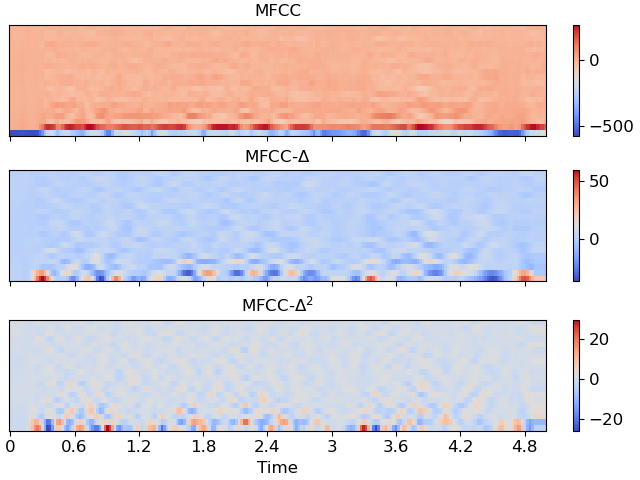

librosa.feature.delta¶
- librosa.feature.delta(data, *, width=9, order=1, axis=- 1, mode='interp', **kwargs)[source]¶
Compute delta features: local estimate of the derivative of the input data along the selected axis.
Delta features are computed Savitsky-Golay filtering.
- Parameters
- datanp.ndarray
the input data matrix (eg, spectrogram)
- widthint, positive, odd [scalar]
Number of frames over which to compute the delta features. Cannot exceed the length of
dataalong the specified axis.If
mode='interp', thenwidthmust be at leastdata.shape[axis].- orderint > 0 [scalar]
the order of the difference operator. 1 for first derivative, 2 for second, etc.
- axisint [scalar]
the axis along which to compute deltas. Default is -1 (columns).
- modestr, {‘interp’, ‘nearest’, ‘mirror’, ‘constant’, ‘wrap’}
Padding mode for estimating differences at the boundaries.
- **kwargsadditional keyword arguments
- Returns
- delta_datanp.ndarray [shape=(…, t)]
delta matrix of
dataat specified order
See also
Notes
This function caches at level 40.
Examples
Compute MFCC deltas, delta-deltas
>>> y, sr = librosa.load(librosa.ex('libri1'), duration=5) >>> mfcc = librosa.feature.mfcc(y=y, sr=sr) >>> mfcc_delta = librosa.feature.delta(mfcc) >>> mfcc_delta array([[-5.713e+02, -5.697e+02, ..., -1.522e+02, -1.224e+02], [ 1.104e+01, 1.330e+01, ..., 2.089e+02, 1.698e+02], ..., [ 2.829e+00, 1.933e+00, ..., -3.149e+00, 2.294e-01], [ 2.890e+00, 2.187e+00, ..., 6.959e+00, -1.039e+00]], dtype=float32)
>>> mfcc_delta2 = librosa.feature.delta(mfcc, order=2) >>> mfcc_delta2 array([[-1.195, -1.195, ..., -4.328, -4.328], [-1.566, -1.566, ..., -9.949, -9.949], ..., [ 0.707, 0.707, ..., 2.287, 2.287], [ 0.655, 0.655, ..., -1.719, -1.719]], dtype=float32)
>>> import matplotlib.pyplot as plt >>> fig, ax = plt.subplots(nrows=3, sharex=True, sharey=True) >>> img1 = librosa.display.specshow(mfcc, ax=ax[0], x_axis='time') >>> ax[0].set(title='MFCC') >>> ax[0].label_outer() >>> img2 = librosa.display.specshow(mfcc_delta, ax=ax[1], x_axis='time') >>> ax[1].set(title=r'MFCC-$\Delta$') >>> ax[1].label_outer() >>> img3 = librosa.display.specshow(mfcc_delta2, ax=ax[2], x_axis='time') >>> ax[2].set(title=r'MFCC-$\Delta^2$') >>> fig.colorbar(img1, ax=[ax[0]]) >>> fig.colorbar(img2, ax=[ax[1]]) >>> fig.colorbar(img3, ax=[ax[2]])
